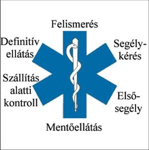
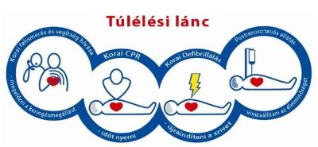

Fogalma
Az elsősegélynyújtás fogalmának meghatározására számos megközelítést találunk.
Gábor
Aurél, a
magyar mentésügy egyik legmeghatározóbb alakja szerint:
"Elsősegélynyújtásnak nevezzük azt az egészségügyi beavatkozást, amelyet akár egészségügyi szakember, akár laikus a végleges ellátás megkezdése előtt végez, baleset vagy hirtelen egészségkárosodás közvetlen következményeinek feltartóztatása, egyben a további egészségi állapotromlás és újabb vagy másodlagos károsodások elhárítása, illetve csökkentése végett."
Almási Róbert az elsősegélynyújtást komplexebb formában értelmezi:
„az elsősegélynyújtás nem csak készség vagy képesség, hanem szándék, tudás és cselekvés egysége és összhangja is egyben.”
Hornyák István megközelítésében az elsősegélynyújtás:
„az az egészségügyi beavatkozás, amelyet bárki a végleges szakellátás megkezdése előtt végez, baleset vagy hirtelen egészségkárosodás közvetlen körülményeinek elhárítása és az állapot további romlásának feltartóztatása érdekében.”
Nem feledkezhetünk meg a brit St. John Ambulance megközelítéséről sem, amely szervezet jelenleg a legtöbb oktatást végzi világviszonylatban. Az elsősegélynyújtás alapkönyve című kiadványukban az alábbiak szerint fogalmaznak:
„Az elsősegély a megsérült vagy hirtelen megbetegedett embereknek nyújtott első segítséget vagy ellátást jelenti.”
Fenti megfogalmazások alapján nem csak a sokféle megközelítést látjuk, hanem a megközelítések komplexitását is. A szűkebb értelemben vett elsősegélynyújtás az életmentő beavatkozásra korlátozódik, míg tágabb értelemben több elemből épül fel.
- az állapotváltozás vagy sérülés felismerése,
- a segélynyújtó, a jelenlévők és a bajbajutott biztonságának megteremtése,
- az életmentő vagy állapotromlást megelőző beavatkozás elvégzése,
- a segélyhívás
- illetve a bajbajutott állapotának nyomon követése, további sérülések vagy tünetek keresése.
Leggyakrabban az alábbi, egyszerűsített és könnyen érthető megfogalmazás használata javasolt:
Az elsősegélynyújtás olyan egészségügyi beavatkozás, melyet bárki - laikus vagy valamilyen egészségügyi képzettséggel rendelkező személy - elvégezhet a sürgősségi ellátás megkezdése előtt azért, hogy a baleset vagy hirtelen egészségkárosodás következményeit elhárítsa.